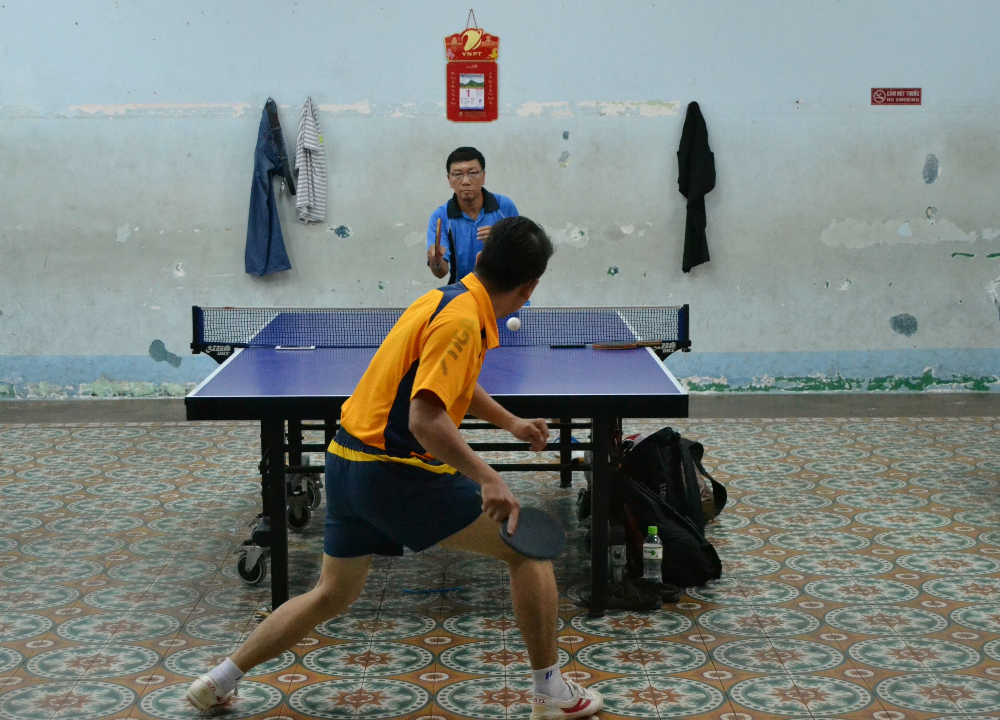
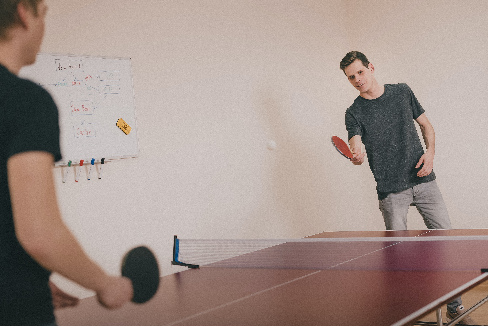
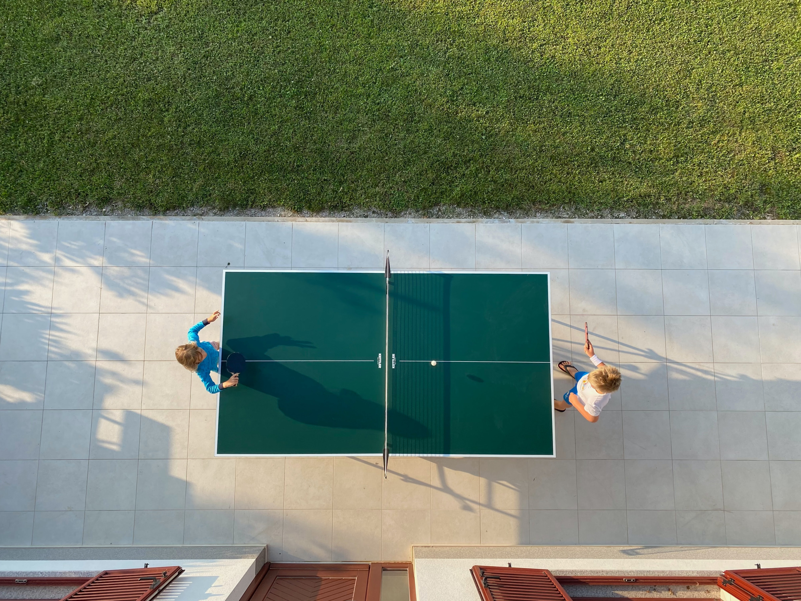

⚽️ ONDE ENCONTRAMOS GEOMETRIA NA MESA?

Quadrado na mesa
A mesa é dividida pela rede, onde cada lado possui um quadrado, podendo
ser calculada pela formula.
"Área = Lado²"

Área da mesa
Área da mesa de tênis, que é um retangulo, sera calculada da seguinte formula.
"Área = base . altura"

Hipotenusa da mesa
ao dividirmos a mesa em dois triangulos rentagulos, conseguimos achar a melhor direção
para bater a bola de tênis, que é a hipotenusa.
"hipotenusa² = cateto oposto² + cateto adjacente²"